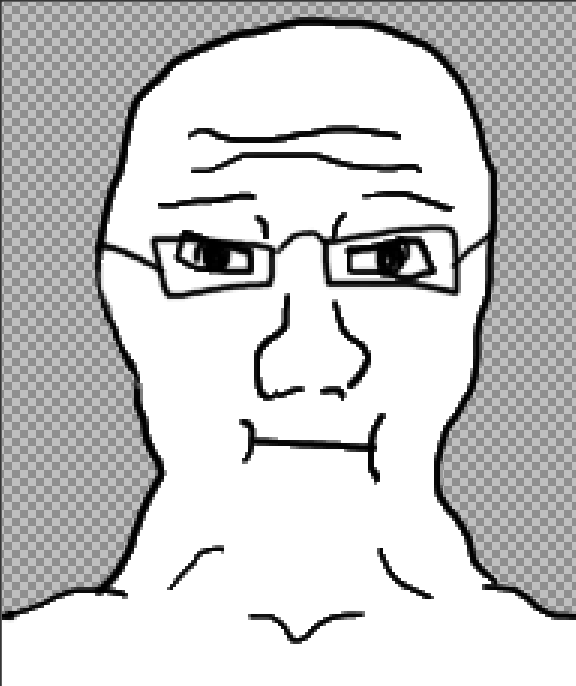
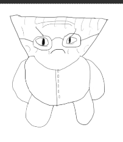

Biography
Who I Am
Hello! I'm Adon Smith Griffin, a sophomore at RIT who's studying for his BS in Game Design & Development (and hopefully later, his accelerated master's)! I'm 19 years old, based in x, and love making people laugh with funny games (while also preaching about how good Godot is).
What I Do
The simplest way to put it is this: I make games. More specifically, I program them. My primary interests are gameplay and systems programming, particularly building reusable systems that make game development more maintainable and easier to do. Beyond programming, I've experience managing projects and coordinate development teams, and when I can, I love exploring areas of game design, including level design, game balancing, sound design, character writing, and worldbuilding.
What Else I Do
Outside of game development, I enjoy speed cubing (Last year, I just got my first sub-40), playing my clarinet, gaming (the current game I've been crazy about is Kerbal Space Program), and spending time with family and friends.
What I Don't Do
Now, I might like doing things surrounding game design, but let me make this clear: I cannot draw to save my life! Near this paragraph is an attempt at a doodle for a game in projects (if the site is updated), and an attempt at drawing a "Wojak" from 2025.
Also, despite being able to play my clarinet at my own leisure and for a band occasionally, I always get really nervous playing for games. Maybe I'll try that one day.
Finally, despite having some skill in UI, I really can't make great-looking UI. I try to base it on something I think looks good and hope people like it. I mean, so far, it's worked!

